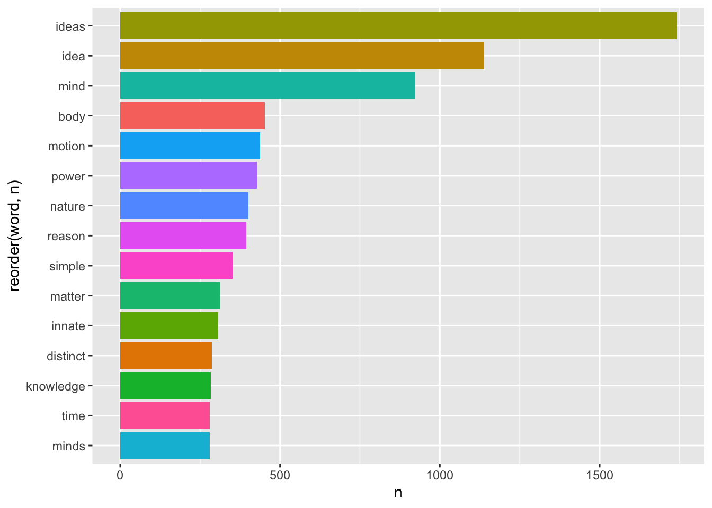
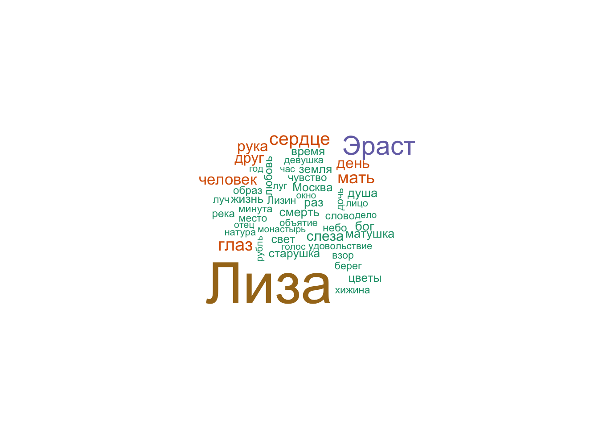
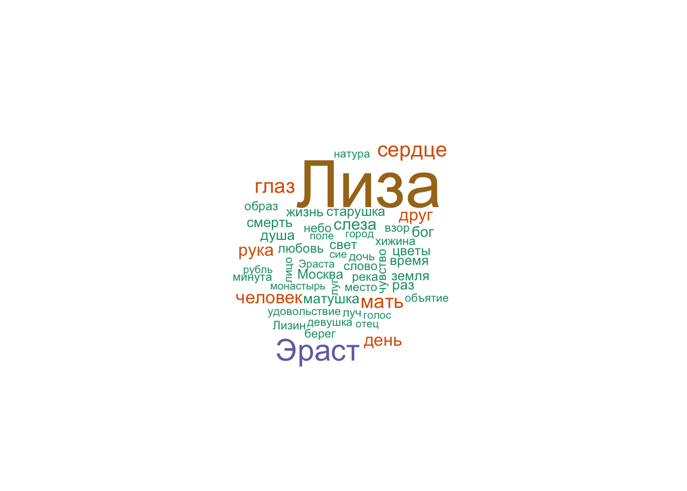

Тема 11 Распределения слов и анализ частотностей
В этом уроке мы научимся считать наиболее частотные и наиболее характерные слова, удалять стоп-слова, познакомимся с алгоритмом стемминга, а также узнаем, как считать type-token ratio (и почему этого делать не стоит).
За основу для всех эти вычислений мы возьмем три философских трактата, написанных на английском языке. Это хронологически и тематически близкие тексты:
- “Опыт о человеческом разумении” Джона Локка (1690), первые две книги;
- “Трактат о принципах человеческого знания” Джорджа Беркли (1710);
- “Исследование о человеческом разумении” Дэвида Юма (1748)43.
11.1 Извлечение источников
Источники для этого урока доступны в библиотеке Gutengerg; чтобы их извлечь, следует выяснить gutenberg_id. Пример ниже; таким же образом можно найти id для трактатов Локка и Беркли.
# install.packages("gutenbergr")
library(gutenbergr)
library(tidyverse)
library(stringr)
gutenberg_works(str_detect(author, "Hume"), languages = "en")## # A tibble: 99 × 8
## gutenberg_id title author gutenberg_author_id language gutenberg_bookshelf
## <int> <chr> <chr> <int> <chr> <chr>
## 1 2868 "The Gr… Hume,… 1057 en <NA>
## 2 4223 "The My… Hume,… 1057 en <NA>
## 3 4320 "An Enq… Hume,… 1440 en Philosophy
## 4 4531 "The Se… Hume,… 1057 en <NA>
## 5 4583 "Dialog… Hume,… 1440 en Philosophy/Paganism
## 6 4705 "A Trea… Hume,… 1440 en Philosophy
## 7 4946 "Madame… Hume,… 1057 en <NA>
## 8 9662 "An Enq… Hume,… 1440 en Harvard Classics/P…
## 9 10574 "The Hi… Hume,… 1440 en United Kingdom
## 10 13117 "The Ne… Hume,… 4843 en Natural History/An…
## # ℹ 89 more rows
## # ℹ 2 more variables: rights <chr>, has_text <lgl>Когда id найдены, gutenbergr позволяет загрузить сочинения; на этом этапе часто возникают ошибки – в таком случае надо воспользоваться одним из зеркал. Список зеркал, как уже говорилось в уроке про импорт данных, доступен по ссылке: https://www.gutenberg.org/MIRRORS.ALL.
my_corpus <- gutenberg_download(meta_fields = c("author", "title"), c(9662, 4723, 10615), mirror = "https://www.gutenberg.org/dirs/")
my_corpus## # A tibble: 23,844 × 4
## gutenberg_id text author title
## <int> <chr> <chr> <chr>
## 1 4723 "A Treatise Concerning the Principles of Human Kno… Berke… A Tr…
## 2 4723 "" Berke… A Tr…
## 3 4723 "" Berke… A Tr…
## 4 4723 "by" Berke… A Tr…
## 5 4723 "" Berke… A Tr…
## 6 4723 "George Berkeley (1685-1753)" Berke… A Tr…
## 7 4723 "" Berke… A Tr…
## 8 4723 "" Berke… A Tr…
## 9 4723 "WHEREIN THE CHIEF CAUSES OF ERROR AND DIFFICULTY … Berke… A Tr…
## 10 4723 "WITH THE GROUNDS OF SCEPTICISM, ATHEISM, AND IRRE… Berke… A Tr…
## # ℹ 23,834 more rowsВ этом тиббле хранятся все три текста, которые нам нужны. Уточнить уникальные называния и имена можно двумя способами: при помощи функции unique() из базового R или distinct() из tidyverse.
## [1] "A Treatise Concerning the Principles of Human Knowledge"
## [2] "An Enquiry Concerning Human Understanding"
## [3] "An Essay Concerning Humane Understanding, Volume 1\r\nMDCXC, Based on the 2nd Edition, Books 1 and 2"## # A tibble: 3 × 1
## author
## <chr>
## 1 Berkeley, George
## 2 Hume, David
## 3 Locke, John11.2 Подготовка источников
Прежде чем приступать к анализу, придется немного прибраться. Для этого используем инструменты tidyverse, о которых шла речь в главе про опрятные данные.
my_corpus <- my_corpus %>%
select(-gutenberg_id) %>%
select(-title) %>%
relocate(text, .after = author) %>%
mutate(author = str_remove(author, ",.+$")) %>%
filter(text != "")
head(my_corpus, 3)## # A tibble: 3 × 2
## author text
## <chr> <chr>
## 1 Berkeley A Treatise Concerning the Principles of Human Knowledge
## 2 Berkeley by
## 3 Berkeley George Berkeley (1685-1753)В случае с Юмом отрезаем предисловия, оглавление и индексы, а также номера разделов (везде прописными). Многие слова, которые в оригинале были выделены курсивом, окружены знаками подчеркивания (_), их тоже удаляем.
Hume <- my_corpus %>%
filter(author == "Hume") %>%
filter(!row_number() %in% c(1:25),
!row_number() %in% c(4814:nrow(my_corpus))) %>%
mutate(text = str_replace_all(text, "[[:digit:]]", " ")) %>%
mutate(text = str_replace_all(text, "_", " ")) %>%
filter(!str_detect(text, "SECTION .{1,4}"))
sample_n(Hume, 3)## # A tibble: 3 × 2
## author text
## <chr> <chr>
## 1 Hume it is attended with an unavoidable contrariety in our judgements, and
## 2 Hume depart from the primary instincts of nature, and to embrace a new syst…
## 3 Hume superlative intelligence and benevolence are entirely imaginary, or, atВ случае с Беркли отрезаем метаданные и посвящение в самом начале, а также удаляем нумерацию параграфов. Кроме того, текст содержит примечания следующего вида: [Note: Vide Hobbes’ Tripos, ch. v. sect. 6.]44, от них тоже следует избавиться.
Berkeley <- my_corpus %>%
filter(author == "Berkeley") %>%
filter(!row_number() %in% c(1:38)) %>%
mutate(text = str_replace_all(text, "[[:digit:]]+?\\.", " ")) %>%
mutate(text = str_replace_all(text, "\\[.+?\\]", " ")) %>%
mutate(text = str_replace_all(text, "[[:digit:]]+", " "))Что касается Локка, то здесь удаляем метаданные и оглавление в самом начале, а также посвящение; удаляем подчеркивания вокруг слов. “Письмо к читателю” уже содержит некоторые философские положения, и его можно оставить.
Locke <- my_corpus %>%
filter(author == "Locke") %>%
filter(!row_number() %in% c(1:135)) %>%
mutate(text = str_replace_all(text, "_", " ")) %>%
mutate(text = str_replace_all(text, "[[:digit:]]", " "))Соединив обратно все три текста, замечаем некоторые орфографические нерегулярности; исправляем.
11.3 Токенизация
После этого делим корпус на слова, как мы уже делали в уроке про токенизацию.
## # A tibble: 238,538 × 2
## author word
## <chr> <chr>
## 1 Hume moral
## 2 Hume philosophy
## 3 Hume or
## 4 Hume the
## 5 Hume science
## 6 Hume of
## 7 Hume human
## 8 Hume nature
## 9 Hume may
## 10 Hume be
## # ℹ 238,528 more rows11.4 Cтоп-слова
Большая часть слов, которые мы сейчас видим в корпусе, нам пока не интересна – это шумовые слова, или стоп-слова, не несущие смысловой нагрузки. Функция anti_join() позволяет от них избавиться; в случае с английским языком список стоп-слов уже доступен в пакете tidytext; в других случаях их следует загружать отдельно. Для многих языков стоп-слова доступны в пакете stopwords45. Функция anti_join() работает так:

other <- c("section", "chapter", 0:40, "edit", 1710, "v.g", "v.g.a")
corpus_words_nosp <- corpus_words %>%
anti_join(stop_words) %>%
filter(!word %in% other)## Joining with `by =
## join_by(word)`## # A tibble: 73,311 × 2
## author word
## <chr> <chr>
## 1 Hume moral
## 2 Hume philosophy
## 3 Hume science
## 4 Hume human
## 5 Hume nature
## 6 Hume treated
## 7 Hume manners
## 8 Hume peculiar
## 9 Hume merit
## 10 Hume contribute
## # ℹ 73,301 more rowsУборка закончена, мы готовы к подсчетам.
11.5 Абсолютная частотность
Для начала посмотрим на самые частотные слова во всем корпусе.
library(ggplot2)
corpus_words_nosp %>%
count(word, sort = TRUE) %>%
slice_head(n = 15) %>%
ggplot(aes(reorder(word, n), n, fill = word)) +
geom_col(show.legend = F) +
coord_flip() 
Этот график уже дает общее представление о тематике нашего корпуса: это теория познания, в центре которой для всех трех авторов стоит понятие idea.
Однако можно заподозрить, что высокие показатели для слов simple, distinct и powers – это заслуга прежде всего Локка, который вводит понятия “простой идеи” и “отчетливой идеи”, а также говорит о “силах” вещей, благодаря которым они воздействуют как друг на друга, так и на разум. Силы для Локка – это причины идей, и как таковые они часто упоминаются в его тексте. Понятие врожденности (innate) также занимает в первую очередь его: вся первая книга “Опыта” – это опровержение теории врожденных идей. Беркли о врожденности не говорит вообще, а Юм – очень кратко.
Кроме того, хотя мы взяли только две книги из “Опыта” Локка – это самый длинный в нашем корпусе, что создает значительный перекос:
## # A tibble: 3 × 2
## author sum
## <chr> <int>
## 1 Berkeley 11455
## 2 Hume 18182
## 3 Locke 43674Посмотрим статистику по отдельным авторам.
corpus_words_nosp %>%
group_by(author) %>%
count(word, sort = TRUE) %>%
slice_head(n = 15) %>%
ggplot(aes(reorder_within(word, n, author), n, fill = word)) +
geom_col(show.legend = F) +
facet_wrap(~author, scales = "free") +
scale_x_reordered() +
coord_flip()
Наиболее частотные слова (при условии удаления стоп-слов) дают вполне адекватное представление о тематике каждого из трех трактатов.
Согласно Локку, объектом мышления является идея (желательно отчетливая, но тут уж как получится). Все идеи приобретены умом из опыта, направленного на либо на внешние предметы (ощущения, или чувства), либо на внутренние действия разума (рефлексия, или внутреннее чувство). Никаких врожденных идей у человека нет, изначально его душа похожа на чистый лист (антинативизм). Идеи могут быть простыми и сложными; они делятся на модусы, субстанции и отношения. К числу простых модусов относятся пространство, в котором находятся тела, а также продолжительность; измеренная продолжительность представляет собой время.
Беркли спорит с мнением, согласно котором ум способен образовывать абстрактные идеи. В том числе, утверждает он, невозможна абстрактная идея движения, отличная от движущегося тела. Он пытается устранить заблуждение Локка, согласно которому слова являются знаками абстрактных общих идей. В мыслящей душе (которую он также называет умом и духом) существуют не абстрактные идеи, а ощущения, и существование немыслящих вещей безотносительно к их воспринимаемости совершенно невозможно. Нет иной субстанции, кроме духа; немыслящие вещи ее совершенно лишены. По этой причине нельзя допустить, что существует невоспринимающая протяженная субстанция, то есть материя. Идеи ощущений возникают в нас согласно с некоторыми правилами, которые мы называем законами природы. Действительные вещи – это комбинации ощущений, запечатлеваемые в нас могущественным духом.
Согласно Юму, все объекты, доступные человеческому разуму, могут быть разделены на два вида, а именно: на отношения между идеями и факты. К суждениям об отношениях можно прийти благодаря одной только мыслительной деятельности, в то время как все заключения о фактах основаны на отношениях причины и действия. В свою очередь знание о причинности возникает всецело из опыта: только привычка заставляет нас ожидать наступления одного события при наступлении другого. Прояснение этого позволяет добиться большей ясности и точности в философии.
11.6 Стемминг
Поскольку мы не лемматизировали текст, то единственное и множественное число слова idea рассматриваются как разные токены. Один из способов справиться с этим – стемминг.
Стемминг (англ. stemming — находить происхождение) — это процесс нахождения основы слова для заданного исходного слова. Основа слова не обязательно совпадает с морфологическим корнем слова. Стемминг применяется в поисковых системах для расширения поискового запроса пользователя, является частью процесса нормализации текста. Один из наиболее популярных алгоритмов стемминга был написан Мартином Портером и опубликован в 1980 году.
В R стеммер Портера доступен в пакете snowball. К сожалению, он поддерживает не все языки, но русский, французский, немецкий и др. там есть46. Не для всех языков, впрочем, и не для всех задач стемминг – это хорошая идея. Но попробуем применить его к нашему корпусу.
library(SnowballC)
corpus_stems <- corpus_words_nosp %>%
mutate(stem = wordStem(word))
corpus_stems %>%
count(stem, sort = TRUE) %>%
slice_head(n = 15) %>%
ggplot(aes(reorder(stem, n), n, fill = stem)) +
geom_col(show.legend = F) +
coord_flip() 
Все слова немного покромсаны, но вполне узнаваемы. При этом общее количество уникальных токенов стало значительно ниже:
## [1] 8132## [1] 5229Стемминг применяется в некоторых алгоритмах машинного обучения.
11.7 Относительная частотность
Абсолютная частотность – плохой показатель для текстов разной длины. Чтобы тексты было проще сравнивать, разделим показатели частотности на общее число токенов в тексте.
Cначала считаем частотность для всех токенов по авторам.
author_word_counts <- corpus_words %>%
count(author, word, sort = T) %>%
ungroup()
author_word_counts## # A tibble: 14,111 × 3
## author word n
## <chr> <chr> <int>
## 1 Locke the 7431
## 2 Locke of 7044
## 3 Locke and 4817
## 4 Locke to 4603
## 5 Hume the 3182
## 6 Locke in 3056
## 7 Locke that 2954
## 8 Locke it 2742
## 9 Locke is 2462
## 10 Hume of 2461
## # ℹ 14,101 more rowsЗатем – число токенов в каждой книге.
## # A tibble: 3 × 2
## author total
## <chr> <int>
## 1 Berkeley 36777
## 2 Hume 53590
## 3 Locke 148171Соединяем два тиббла:
## # A tibble: 6 × 4
## author word n total
## <chr> <chr> <int> <int>
## 1 Locke the 7431 148171
## 2 Locke of 7044 148171
## 3 Locke and 4817 148171
## 4 Locke to 4603 148171
## 5 Hume the 3182 53590
## 6 Locke in 3056 148171Считаем относительную частотность и умножаем на 100, чтобы получить проценты:
author_word_rf <- author_word_counts %>%
mutate(rf = round((n / total), 5) * 100)
author_word_rf %>%
filter(author == "Berkeley") %>%
head()## # A tibble: 6 × 5
## author word n total rf
## <chr> <chr> <int> <int> <dbl>
## 1 Berkeley the 1915 36777 5.21
## 2 Berkeley of 1550 36777 4.22
## 3 Berkeley and 1178 36777 3.20
## 4 Berkeley to 1057 36777 2.87
## 5 Berkeley that 816 36777 2.22
## 6 Berkeley is 772 36777 2.1011.8 Распределения слов (токенов)
Наиболее частотные слова – это служебные части речи. На графике видно, что подавляющее большинство слов встречается очень-очень редко, а слов с высокой частотностью – мало. Тоненький хвост уходит далеко вправо по оси x, для наглядности зададим произвольный предел.
author_word_rf %>%
ggplot(aes(rf, fill = author)) +
geom_histogram(show.legend = FALSE) +
facet_wrap(~author, scales = "free") 
11.9 Закон Ципфа
Подобная картина характерна для естественных языков. Распределения слов в них подчиняются закону Ципфа. Этот закон носит имя американского лингвиста Джорджа Ципфа (George Zipf) из Гарвардского университета и утверждает следующее:
Если все слова языка или длинного текста упорядочить по убыванию частоты использования, частота n-го слова в списке окажется обратно пропорциональной его порядковому номеру n.
Это можно записать так:
\[tf_{r_i} = \frac{c}{r^α_i}\] или
\[ tf_{r_i} \cdot r^α_i = c \] Извлекая логарифм из обеих частей, получаем:
\[log(tf_{r_i}) = log(c) - α \cdot log(r_i) \]
На всякий случай: логарифм дроби равен разности логарифмов числителя и знаменателя.
Таким образом, мы получаем (почти) линейную зависимость, где c – точка пересечения оси y, a α - коэффициент наклона прямой. Графически это выглядит вот так:
author_word_rf_rank <- author_word_rf %>%
group_by(author) %>%
mutate(rank = row_number())
author_word_rf_rank %>%
ggplot(aes(rank, rf, color = author)) +
geom_line(size = 1.1, alpha = 0.7) +
scale_x_log10() +
scale_y_log10()
Чтобы узнать точные коэффициенты, придется подогнать линейную модель (об этом подробнее в следующих уроках):
## (Intercept) log10(rank)
## 1.749726 -1.272644Мы получили коэффициент наклона α чуть больше -1 (на практике точно -1 встречается редко). Добавим линию регрессии на график:
author_word_rf_rank %>%
ggplot(aes(rank, rf, color = author)) +
geom_line(size = 1.1, alpha = 0.7) +
geom_abline(intercept = 1.744,
slope = -1.26,
linetype = 2,
color = "grey50") +
scale_x_log10() +
scale_y_log10()
Здесь видно, что отклонения наиболее заметны как в области самых частотных слов, так и в области наиболее редких (с высокими рангами).
11.10 TTR (type-token ratio)
На практике это означает, что редкие слова (события) случаются очень часто; это явление известно под названием Large Number of Rare Events (LNRE). И чем длиннее текст, тем больше в нем будет редких слов, но скорость их прибавления постепенно уменьшается (чем дальше, тем сложнее встретить слово, которого еще не было).
Это значит, что сравнивать тексты с точки зрения лексического разнообразия – дело достаточно рискованное, хотя интуитивно кажется, что некоторые авторы пишут более разнообразно, а другие - менее.
Наиболее известная и наиболее проблемная мера лексического разнообразия – это type-token ratio (TTR).
\[ TTR(T) = \frac{Voc(T)}{n} \] где n - общее число токенов, а Voc - число уникальных токенов (типов).
В пакете languageR, написанном лингвистом Гаральдом Баайеном, есть функция, позволяющая быстро производить такие вычисления. Она требует на входе вектор, а не тиббл, поэтому для эксперимента извлечем один из текстов.
## [1] "i" "have" "put" "into" "thy" "hands"## [1] 148171Это немного задумчивая функция, поэтому я создам не 148 тысяч отрывков, а всего 40.
## ........................................## Chunk Tokens Types HapaxLegomena DisLegomena TrisLegomena Yule Zipf
## 1 1 1000 409 273 64 18 83.8600 -0.6618709
## 2 2 2000 638 407 100 34 97.8500 -0.7749886
## 3 3 3000 854 544 121 59 102.3711 -0.8420029
## 4 4 4000 1013 608 154 72 103.5000 -0.8514063
## 5 5 5000 1133 663 171 76 103.8696 -0.8742347
## 6 6 6000 1256 713 193 85 105.2767 -0.8822200
## TypeTokenRatio Herdan Guiraud Sichel Lognormal
## 1 0.4090000 0.7683545 12.93372 0.1564792 0.4346750
## 2 0.3190000 0.7405672 14.26611 0.1567398 0.5013140
## 3 0.2846667 0.7282750 15.59184 0.1416862 0.5191183
## 4 0.2532500 0.7124681 16.01694 0.1520237 0.5779033
## 5 0.2266000 0.6992475 16.02304 0.1509267 0.6194817
## 6 0.2093333 0.6834975 16.21489 0.1536624 0.6548148
Тут много всего интересного, но обратим внимание лишь на два верхних окошка слева: количество типов растет постоянно, но с разной скоростью. Так же меняется числов гапаксов: нечто похожее мы уже замечали, когда говорили о гапаксах у Платона. Подробнее о различных мерах лексического разнообразия см.: (Baayen 2008, 222–36) и (Savoy 2020).
11.11 TF-IDF
Мы уже заметили, говоря об абсолютной частотности, что для трех авторов в нашем условном корпусе многие слова общие. Для многих алгоритмов машинного обучения используется другая мера, tf-idf (term frequency - inverse document frequency).

Логарифм единицы равен нулю, поэтому если слово встречается во всех документах, его tf-idf равно нулю. Чем выше tf-idf, тем более характерно некое слово для некоторого документа. Однако относительная частотность тоже учитывается! Например, Беркли один раз упоминает “сахарные бобы”, а Локк – “миндаль”, но из-за редкой частотности tf-idf для подобных слов будет низкий.
Функция bind_tf_idf() принимает на входе тиббл с абсолютной частотностью для каждого слова.
author_word_tfidf <- author_word_rf %>%
filter(!word %in% other) %>%
bind_tf_idf(word, author, n)
author_word_tfidf## # A tibble: 14,103 × 8
## author word n total rf tf idf tf_idf
## <chr> <chr> <int> <int> <dbl> <dbl> <dbl> <dbl>
## 1 Locke the 7431 148171 5.01 0.0502 0 0
## 2 Locke of 7044 148171 4.75 0.0476 0 0
## 3 Locke and 4817 148171 3.25 0.0325 0 0
## 4 Locke to 4603 148171 3.11 0.0311 0 0
## 5 Hume the 3182 53590 5.94 0.0594 0 0
## 6 Locke in 3056 148171 2.06 0.0206 0 0
## 7 Locke that 2954 148171 1.99 0.0199 0 0
## 8 Locke it 2742 148171 1.85 0.0185 0 0
## 9 Locke is 2462 148171 1.66 0.0166 0 0
## 10 Hume of 2461 53590 4.59 0.0459 0 0
## # ℹ 14,093 more rowsВыбираем слова с высокой tf-idf:
## # A tibble: 14,103 × 7
## author word n rf tf idf tf_idf
## <chr> <chr> <int> <dbl> <dbl> <dbl> <dbl>
## 1 Hume event 71 0.132 0.00133 1.10 0.00146
## 2 Locke innate 297 0.2 0.00201 0.405 0.000813
## 3 Hume sentiment 35 0.065 0.000653 1.10 0.000718
## 4 Hume reasoning 91 0.17 0.00170 0.405 0.000689
## 5 Locke duration 249 0.168 0.00168 0.405 0.000682
## 6 Hume fact 80 0.149 0.00149 0.405 0.000605
## 7 Hume enquiry 29 0.054 0.000541 1.10 0.000595
## 8 Hume conjoined 26 0.049 0.000485 1.10 0.000533
## 9 Hume energy 26 0.049 0.000485 1.10 0.000533
## 10 Hume witnesses 22 0.041 0.000411 1.10 0.000451
## # ℹ 14,093 more rowsСнова визуализируем.
author_word_tfidf %>%
arrange(-tf_idf) %>%
group_by(author) %>%
top_n(15) %>%
ungroup() %>%
ggplot(aes(reorder_within(word, tf_idf, author), tf_idf, fill = author)) +
geom_col(show.legend = F) +
labs(x = NULL, y = "tf-idf") +
facet_wrap(~author, scales = "free") +
scale_x_reordered() +
coord_flip()## Selecting by tf_idf
На таком графике авторы выглядят гораздо более самобытными, но будьте осторожны: все то, что их сближает (а это не только служебные части речи!), сюда просто не попало.
Можно также заметить, что ряд характерных слов связаны не столько с тематикой, сколько со стилем: чтобы этого избежать, можно использовать лемматизацию или задать правило для замены вручную.
11.12 Сравнение при помощи диаграммы рассеяния
Столбиковая диаграмма – не единственный способ сравнить частотности слов. Еще один наглядный метод – это диаграмма рассеяния с относительными частотностями. Функция spread() позволяет разделить один столбец на несколько новых, а gather(), напротив, – собрать.
freq <- author_word_rf %>%
anti_join(stop_words) %>%
mutate(rf = rf / 100) %>%
filter(rf > 0.0001) %>%
select(-n, -total) %>%
spread(author, rf, fill = 0) %>%
gather(author, rf, Hume:Locke)## Joining with `by =
## join_by(word)`## # A tibble: 2,458 × 4
## word Berkeley author rf
## <chr> <dbl> <chr> <dbl>
## 1 absence 0 Hume 0
## 2 absent 0 Hume 0
## 3 absolute 0.00071 Hume 0.00021
## 4 absolutely 0.00027 Hume 0.00015
## 5 abstract 0.0025 Hume 0.00035
## 6 abstracted 0.00046 Hume 0
## 7 abstracting 0.00014 Hume 0
## 8 abstraction 0.00049 Hume 0
## 9 abstruse 0 Hume 0.00017
## 10 absurd 0.00049 Hume 0.00017
## # ℹ 2,448 more rowslibrary(scales)
freq %>%
ggplot(aes(x = rf, y = Berkeley)) +
geom_abline(color = "grey40", lty = 2) +
geom_jitter(alpha = 0.1, size = 2.5, width = 0.3,
height = 0.3, color = "darkblue") +
geom_text(aes(label = word), check_overlap = TRUE,
vjust = 1.5, color = "grey30") +
scale_x_log10(labels = percent_format()) +
scale_y_log10(labels = percent_format()) +
facet_wrap(~author, ncol = 2) +
theme(legend.position = "none") +
theme_minimal() +
labs(y = "Berkeley", x = NULL) Эти три трактата нам еще понадобятся, поэтому сохраняем опрятный текст с уже удаленными стоп-словами.
Литература
Идеей подобного количественного сравнения я обязана моей коллеге Дарье Дроздовой↩︎
https://cran.r-project.org/web/packages/stopwords/readme/README.html↩︎
https://cran.r-project.org/web/packages/SnowballC/SnowballC.pdf↩︎